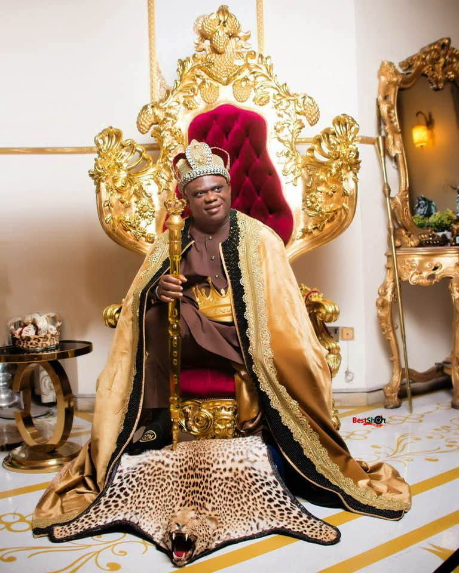
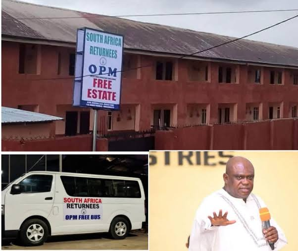
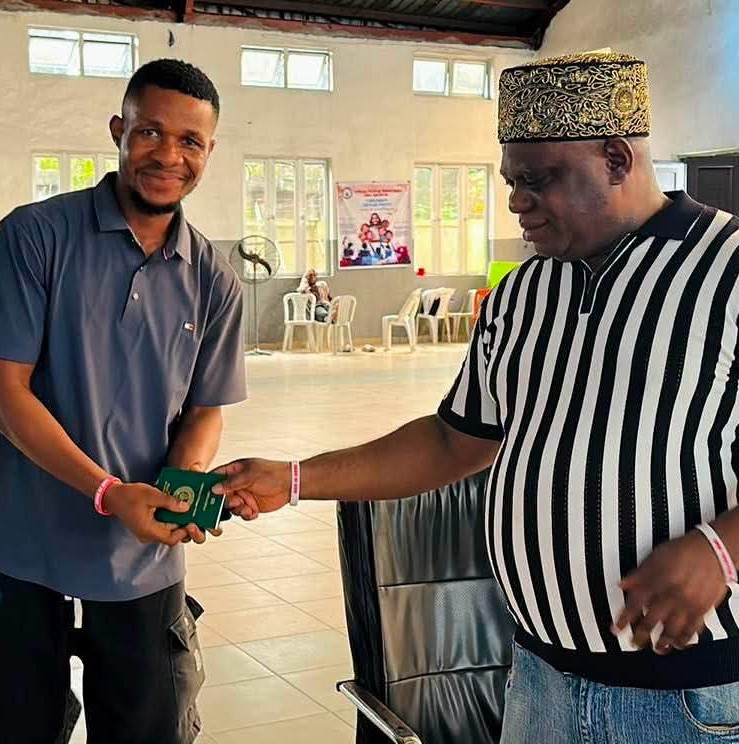
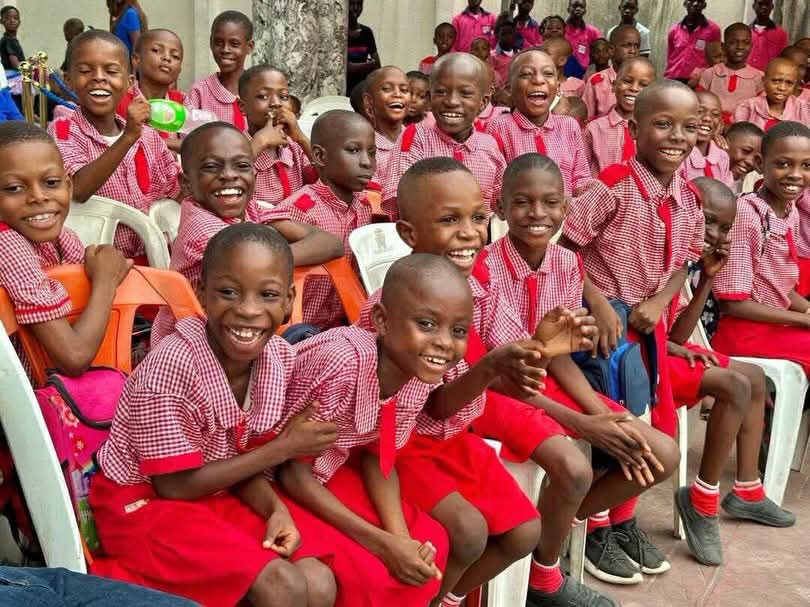

10th September 2026 · Banquet Hall, Government House, Umuahia, Abia State
It was a night Umuahia will not forget. On 10th September 2026, inside the historic Banquet Hall, Government House Umuahia, the South East Migration Dialogue (SEMD 2026) reached its crescendo. Before a full hall of migration experts, government officials, traditional rulers, diaspora leaders and civil society actors from all five South East states, the Awards Committee of CSOnetMADE called a single name, and the applause would not stop: HRM Apostle Chibuzor Gift Chinyere, founder and General Overseer of Omega Power Ministries (OPM), Port Harcourt, crowned “Face of Migration and Reintegration 2026.”
The citation was emphatic: while many talk about migration, Apostle Chinyere has built its full circle, sending the less-privileged abroad through fully funded scholarships and verified jobs, and receiving the broken and returning with housing, employment, schools and dignity. In a region where irregular migration has cost countless young lives, his model has proven there is a safe, regular and productive way. When the plaque was raised, the Banquet Hall rose with it.
“He does not just send people away; he provides structural economic, educational and housing solutions for those forced to return home.”
— SEMD 2026 Awards Citation, Banquet Hall, Umuahia
The good works behind the crown — one man's war against dangerous migration
Africa's largest faith-based international scholarship scheme: 7,000+ fully funded scholarships for less-privileged students to universities in Turkey, Poland, Cyprus, the USA, UK and Canada. OPM covers everything — international passport, visa, flight ticket, tuition and accommodation — from year one to graduation.
Instead of desert and Mediterranean routes, OPM exports verified skills: sponsored passports, work visas and placements for artisans in Saudi Arabia's oil and gas sector and beyond. The OPM Free School of Skills trains 926 students across 18 vocational departments, with certificates recognised for Middle East employment — and a new estate being acquired to house out-of-state trainees.
When xenophobia struck South Africa, he acquired and renovated a mini-estate in Aluu, Rivers State — absorbing 65 returnee families into free, furnished homes with daily meals and a dedicated OPM Returnee Bus for school runs. Children enter OPM's 43 free schools automatically; wives receive business capital; husbands enter vocational training.
A signature OPM innovation: matching returning skills with instant local jobs. Returnee nurse Mrs. Ogechukwu Okafor gained automatic employment at the OPM Free Specialist Hospital; former South Africa teacher Mrs. Blessing Nwanna was absorbed into the OPM Free School staff — proving that return can mean restoration, not regression.
International Scholarships
Returnee Families Housed
Vocational Students (Free)
Free Schools in Nigeria
Why the judges said no other nominee came close
| Pillar | Action Taken by Apostle Chinyere | Migration Impact |
|---|---|---|
| Housing | Acquired an exclusive mini-estate in Aluu, Rivers State. | Wiped out homelessness for 65 returned families. |
| Labour Absorption | Instant employment for qualified returnees (nurses, teachers). | Immediate economic restoration; bypasses local unemployment. |
| Labour Mobility | Funded passports and testing for youth moving to the Middle East. | Promotes safe, documented economic migration. |
| Education | Automatic enrolment in OPM Free Schools, plus a dedicated school bus. | Prevents children of displaced migrants from dropping out. |
From scholarship beneficiaries now graduating in Europe, to nurses who fled xenophobia and now earn at the OPM Free Specialist Hospital, to artisans working legally in the Gulf, the proof of the blueprint is alive in thousands of lives. It is this rare combination of outbound opportunity and inbound compassion that made the Banquet Hall verdict unanimous.
Frames from a life spent moving people - safely

The King at home with his calling

The Returnee Free Estate & bus, Port Harcourt

Encouraging safe pathways of migration

Free schools — hope served daily
The South East Heroes of Migration Award 2026 has come and gone, but the mandate it recognised has not ended. Every scholarship granted, every passport funded, every returnee family housed, and every child fed in OPM's 43 free schools remains a standing rebuke to the desert routes and Mediterranean tragedies, and a standing invitation to do migration the dignified way.
Award Conferred: 10th September 2026 · Banquet Hall, Government House Umuahia
HRM Apostle Chibuzor Gift Chinyere — Face of Migration 2026.